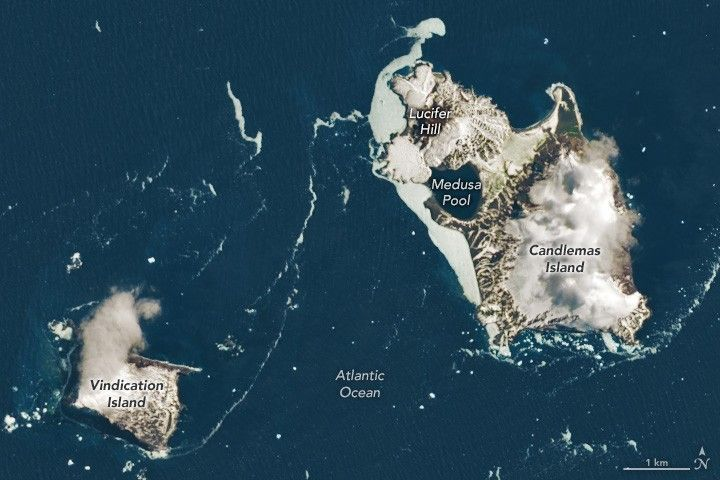

Islands of Fire and Ice Veiled in Cloud
On February 2, 1775, during Captain James Cook’s second Pacific voyage, the explorer sighted two rugged volcanic islands in the South Atlantic Ocean. He named the larger island Candlemas, after the Christian holiday on which it was discovered. The smaller island later became known as Vindication, after a 1930 expedition confirmed Cook’s original report that two closely spaced islands existed there.
These islands are part of the South Sandwich Islands—a remote chain more than 1,600 kilometers (1,000 miles) from South America or Antarctica. The region is frequently cloudy, making clear satellite images rare. This image, taken by the OLI-2 (Operational Land Imager-2) on Landsat 9 on November 18, 2022, is one of the clearest in the past decade. Candlemas and Vindication islands rise from icy waters, their volcanic foundations heavily shaped by snow, ice, and the harsh South Atlantic environment.
Candlemas Island formed initially as two separate islands, which merged several hundred years ago. The larger southeastern portion is older, consisting of an eroded stratovolcano draped in glacial ice. The northwestern part features lava flows radiating from cinder cones, including Lucifer Hill. Historical reports from 1823 and 1911 noted dark clouds and white steam rising from this volcanic dome, and sporadic activity continued to be observed throughout the 20th century.
Vindication Island was also formed by volcanism, though there are no reports of recent activity. Erosion is now the dominant force, with the island described as “greatly reduced” by the marine environment and bounded by steep cliffs.
The South Sandwich Islands comprise eleven small volcanic peaks formed by subduction of the South American Plate beneath the South Sandwich Plate. Though atmospheric conditions often limit visibility, weather patterns can produce spectacular phenomena. Under the right conditions, the peaks disturb passing winds, creating striking bands of wave clouds visible in satellite imagery.